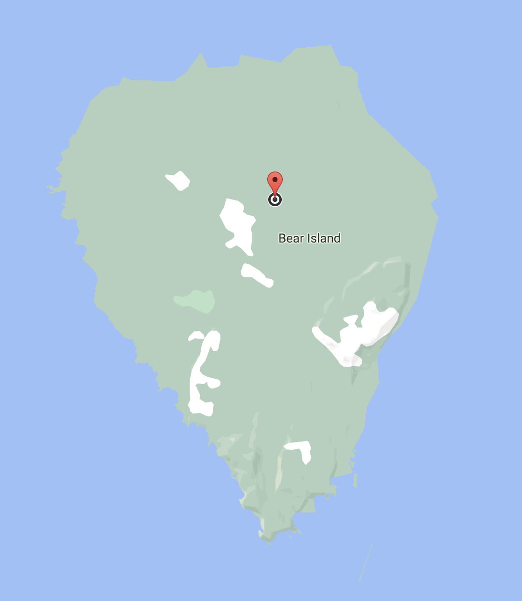

Welcome to
FreshTea!
Tea made from the highest quality ingredients sourced from local suppliers. Browse our vast menu with all the delights you could imagine. Begin your tea escapade below by ordering now.
Order NowFind us here at Bear Island
The Founding of FreshTea
FreshTea has a simple yet powerful origin story. Founded by a group of brilliant graduates from the University of Michigan, FreshTea is the brainchild of Dr. Tea and Mr. Fresh. Beginning in 2015, they built the facility by hand and completed construction 3 years later. Ever since completion, FreshTea has been serving and giving back to the community by hosting culture clubs and events.
The Origins of Bubble Tea
Sweet milk tea was a common beverage in the 1980's in Taiwan and Taipei. Chewy tapioca balls or pearls were popular desserts during the same time period. Innovative food stall owners mixed the two elements to create a creamy sweet concoction of what is now known as boba tea! Through the years, variations like fruit teas and fruit jellies have also emerged. Boba nowadays is a popular drink internationally.
SourceReviews
Bobby Bobert
12/31/21
I love this place! The regular milk tea with golden boba is my favorite order. It tastes so amazing.
Robby Robert
6/1/21
FreshTea is truly an exquisite experience. I would recommend trying out all the drinks—you will not be disappointed. Wonderful high quality drinks and toppings are served here.
Poppy Popert
1/31/21
For anyone wondering, yes FreshTea really is located on Bear Island. I have been a regular customer since 2019 and I can attest to the high caliber teas FreshTea serves! Not often mentioned is the beautiful natural scenery.
Name:
Rating:
Post a Review